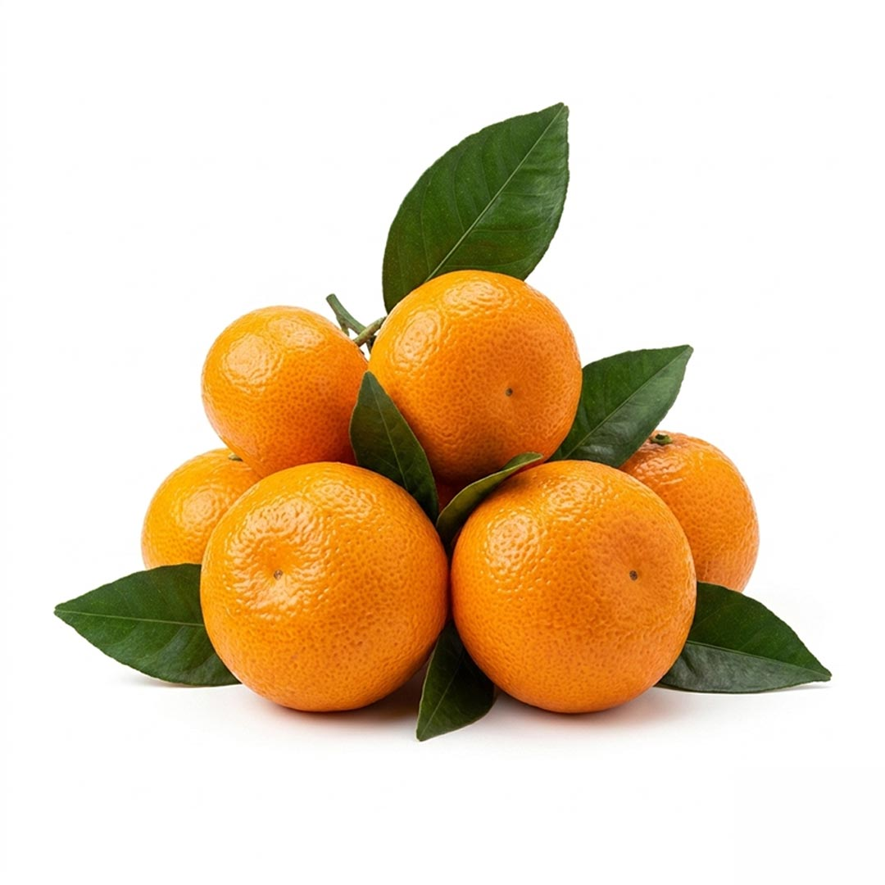
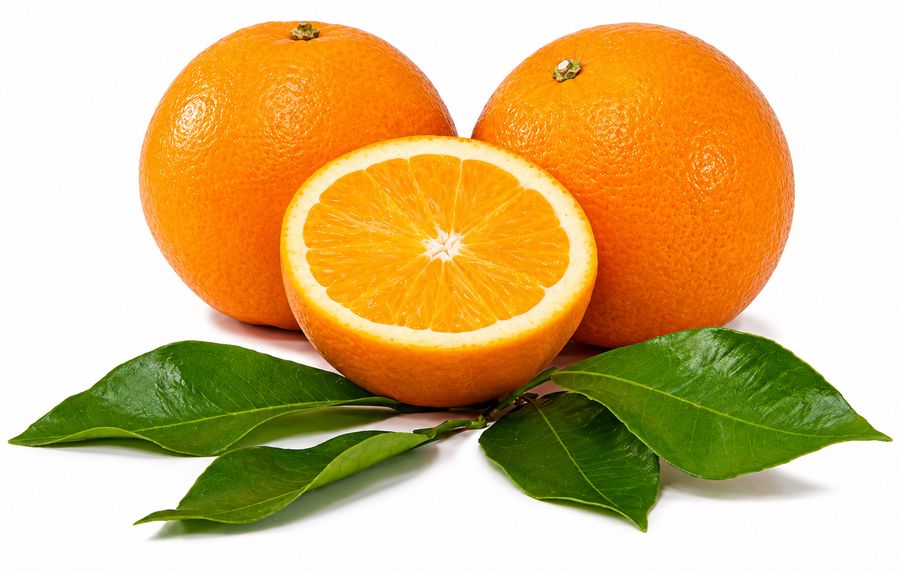
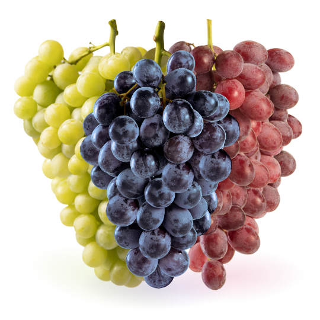
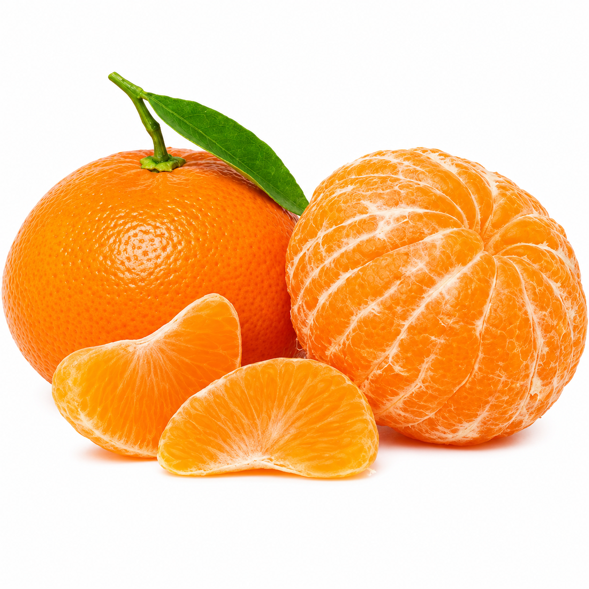
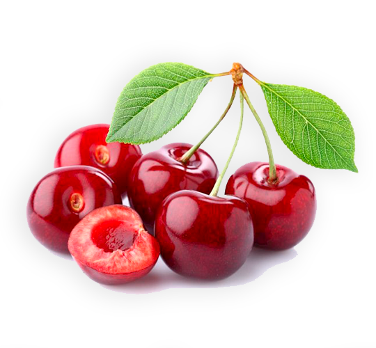
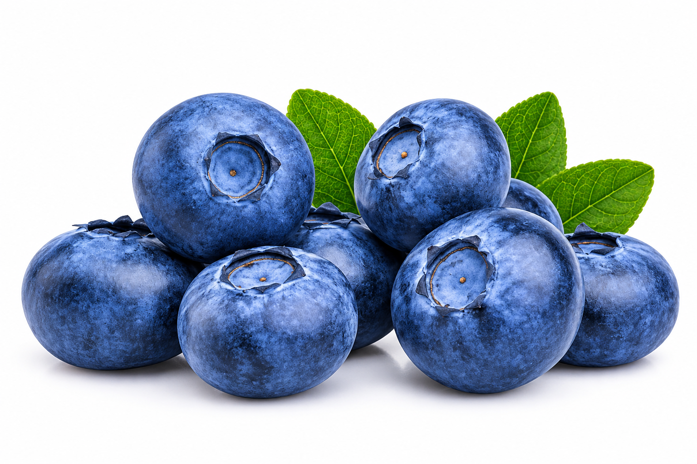
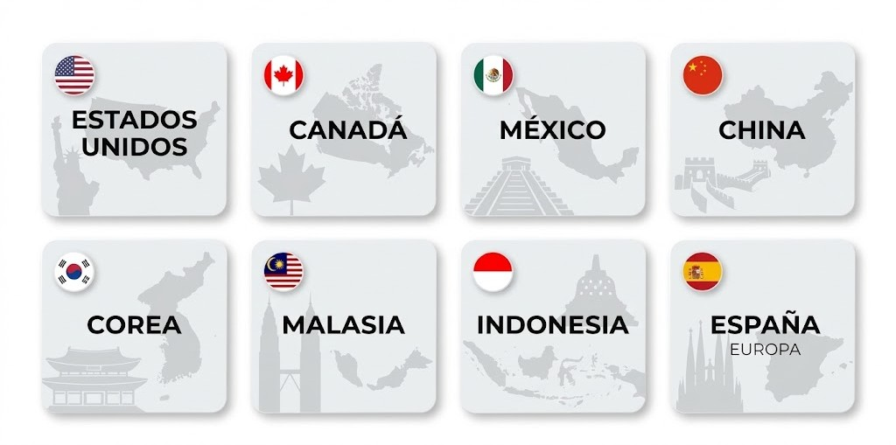
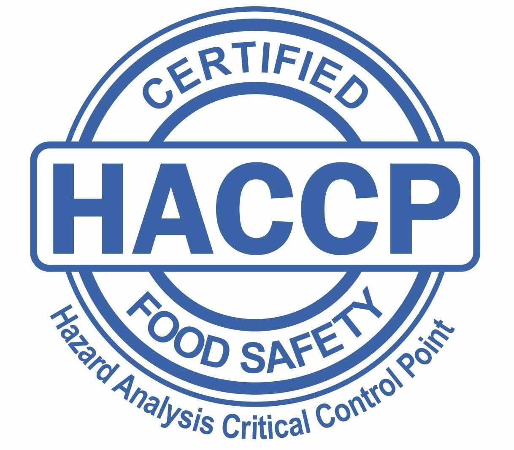
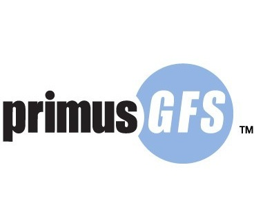

Tradición y excelencia desde nuestros campos chilenos al mundo.
Desde nuestros inicios en 1983 con 70 hectáreas, hemos crecido hasta superar las 600 hectáreas propias en la III y IV Región. En 2002 nació Norfrut para exportar nuestra producción a 8 países y abastecer a más de 30 clientes globales.
Apasionados por la calidad premium, controlamos toda la cadena productiva y garantizamos una rigurosa cadena de frío mediante la moderna flota de nuestra empresa relacionada, Transportes SAE Ltda., consolidándonos como un referente de confianza en el mercado internacional.
Proveer a nuestros clientes internacionales con fruta fresca y de excelente calidad, cumpliendo sus necesidades bajo estrictas normas de seguridad alimentaria.
Invertir sostenidamente en nuestros campos para responder a la demanda global, estableciendo relaciones a largo plazo basadas en la confianza y el respeto mutuo.
La fuente indispensable de la empresa.
Mantenida en todo el proceso productivo.
Fuente de origen de nuestros productos.
En todos nuestros procesos y despachos.






Más de 600 hectáreas de plantaciones propias en los valles de Copiapó y Ovalle. Contamos con salas de packing automatizadas y climatizadas, y un frigorífico estratégico en El Palqui (Ovalle).

Contamos con 3 certificaciones internacionales, cuyas auditorías continuas aseguran la trazabilidad desde el cultivo hasta la recepción final por parte del consumidor.
Normas internacionalmente reconocidas sobre las buenas prácticas agrícolas gestionadas por Food Plus GmbH.

Método operativo estructurado para identificar riesgos de inocuidad alimentaria y evitar peligros.

Esquema de auditoría evaluado por Global Food Safety Initiative (GFSI) que cubre GAP y GMP.
Complete el formulario a continuación y nuestro equipo comercial se pondrá en contacto con usted a la brevedad.